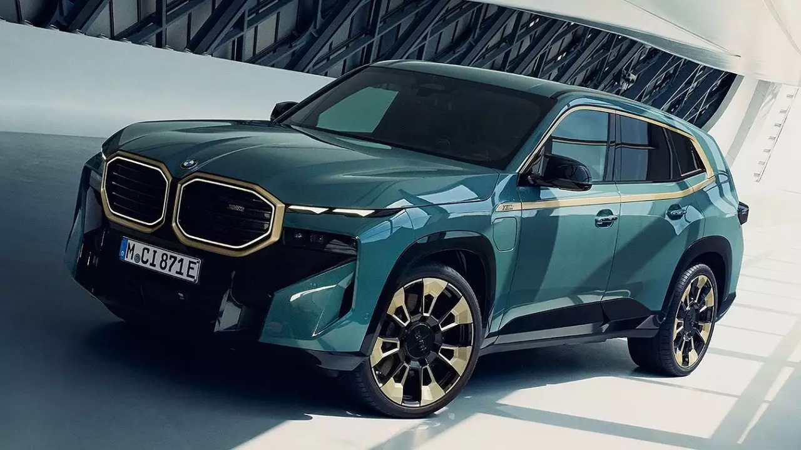

The BMW XM is a high-performance SUV introduced by BMW's M division, marking the first standalone M model since the iconic BMW M1. Launched in 2022, the XM combines BMW's luxury with cutting-edge technology and extreme performance.
It features a plug-in hybrid powertrain that pairs a V8 engine with an electric motor, delivering a combined output of over 700 horsepower.
The XM also boasts an aggressive and distinctive design, with a bold front grille, sharp lines, and a luxurious interior equipped with the latest in infotainment and driver assistance systems.
This vehicle reflects BMW's commitment to innovation and performance in the SUV segment.
The BMW XM is a flagship SUV that represents a significant step for BMW, blending high performance with luxury and electrification. Here’s a more detailed overview:
Key Features and Details
Performance and Powertrain
- Engine:The BMW XM is powered by a 4.4-liter V8 twin-turbocharged engine paired with an electric motor. This plug-in hybrid setup delivers a combined output of around 644 to 738 horsepower, depending on the model variant.
- Torque : 0-60 mph: The BMW XM can accelerate from 0 to 60 mph in around 3.8 to 4.1 seconds, making it one of the quickest SUVs in its class.
- Top Speed: The top speed is electronically limited to around 155 mph, with the option to increase it to 168 mph with the M Driver’s Package.
Design and Exterior
- Exterior Styling:The BMW XM has a bold and muscular design, featuring a large kidney grille, angular lines, and distinctive lighting elements.
The aggressive stance and wide body give it a commanding presence on the road.
- Wheels:The SUV comes with large, 23-inch alloy wheels as standard, further enhancing its sporty appearance.
- Color Options: The XM is available in a variety of color options, including exclusive M-specific shades that highlight its performance pedigree.
Interior and Comfort
- Luxury Interior: Inside, the BMW XM offers a luxurious and high-tech cabin.
It features premium materials like leather, carbon fiber, and Alcantara, providing a refined atmosphere.
- Seating: The SUV can comfortably seat five passengers, with multi-contour seats that offer extensive adjustments, heating, cooling, and massage functions.
- Infotainment: The interior is dominated by a large curved display that integrates the digital instrument cluster and the infotainment system.
BMW’s iDrive 8 system provides intuitive control over various vehicle functions, including navigation, media, and vehicle settings.
- Sound System: A high-end Bowers & Wilkins Diamond Surround Sound System is available, offering an immersive audio experience.
Technology and Features
- Each Maybach Haute Voiture is highly customizable, allowing buyers to tailor the vehicle to their personal tastes. This includes choices of materials, colors, and even specific design elements, ensuring that no two vehicles are exactly alike.
The level of customization is akin to a bespoke fashion piece, where clients can choose the fabric, color, and finish that best suits their personal style.
- Driver Assistance:The XM is equipped with a comprehensive suite of driver assistance systems, including adaptive cruise control, lane-keeping assist, automated emergency braking, and more.
- M Mode: The M Mode button allows drivers to tailor the driving experience to their preferences, adjusting settings like suspension, steering, and throttle response for a more dynamic drive.
Electrification and Efficiency
- Battery and Electric Range:The BMW XM’s hybrid system includes a 25 kWh battery, providing an all-electric range of up to 30 miles, making it suitable for short commutes on electric power alone.
- Charging: The battery can be charged via a standard outlet or a faster charger, with charging times varying depending on the method.
Price and Availability
- Pricing: The BMW XM starts at around $159,000, with higher-spec models and additional options pushing the price significantly higher.
- Market Position: Positioned as a high-end luxury SUV, the XM competes with other performance-oriented luxury SUVs like the Lamborghini Urus, Porsche Cayenne Turbo S E-Hybrid, and Aston Martin DBX.
| BMW XM |
| Top Speed |
249 kmph |
| ARAI Mileage |
11.29 kmpl |
| WLTP Mileage |
61.9 kmpl |
| Engine Displacement |
4395 cc |
| Max Power |
643.69bhp@5400-7200rpm |
| Max Torque |
800Nm@1600-5000rpm |
| Transmission Type |
Automatic |
| Boot Space |
390 Litres |